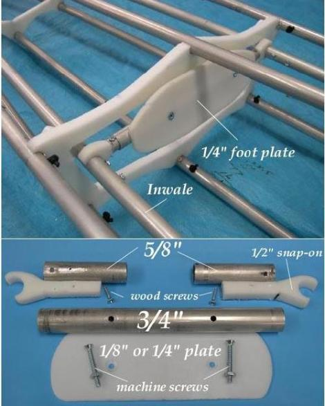
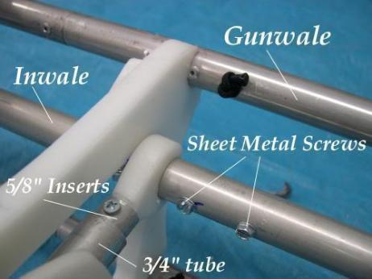

| Adjustable Footbrace (1 of 2) | Menu Previous Page Next Page |
|  |

Footbrace - If a footbrace is required in lieu of using cross section 3 or a foam block as the brace, an aluminum / HDPE adjustable footbrace can be fabricated. Two 5/8" inserts, a 3/4" tube, and a HDPE foot plate are secured to the inwales with snap on connectors. Tube dimensions vary depending on footbrace location.
Stops -Sheet metal screws, spaced 1" apart serve as the stops for the adjustable foorbrace.
|